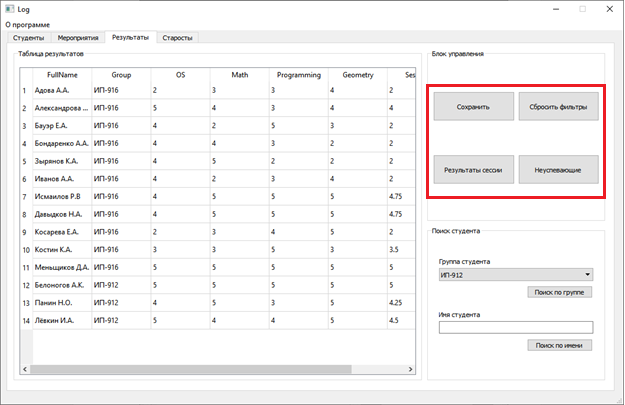
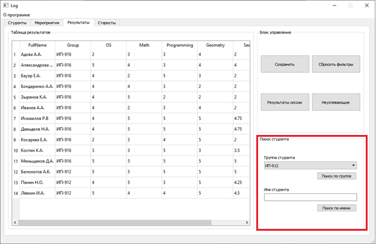

Вкладка результаты представляет из себя большое окно, в котором расположены все студенты, их оценки по определнным прдеметам, и результат сессии. Справа расположен блок управления, сотоящий из 4 кнопок Сохранить, Сбросить фильтры, Результаты сесси, Не успевающие
.

Кнопка Результаты сесси, имеет аналог, если после ввода в таблице нажать на клавишу "Enter", то результат автоматически вычислиться.
Ниже распологается блок с поиском определенного студента, это тот же самый поиск, что и на первой вкладке "Студенты".
